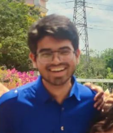

Web Developer
Hi, I’m a 2nd year university student doing my Majors in Computer Science and Engineering from SRM Institute of Science and Technology and I’m an aspiring Software Developer. I’m a passionate, hardworking and competitive individual who loves to explore and learn new things. For challenges I say bring them on!!.
Image Search Engine | JS | CSS | HTML |:
Login & Signup | ExpressJS | Handelbars | NodeJS |:
You can find me on: